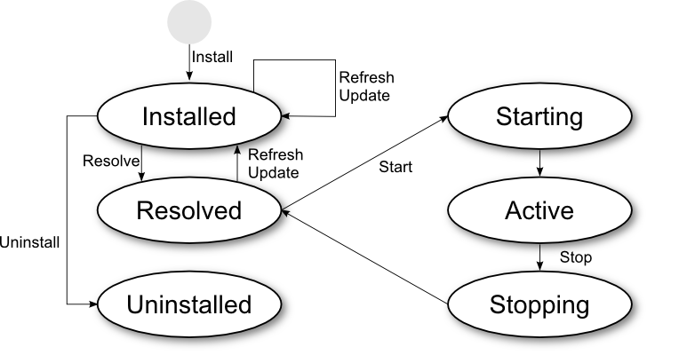
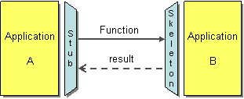
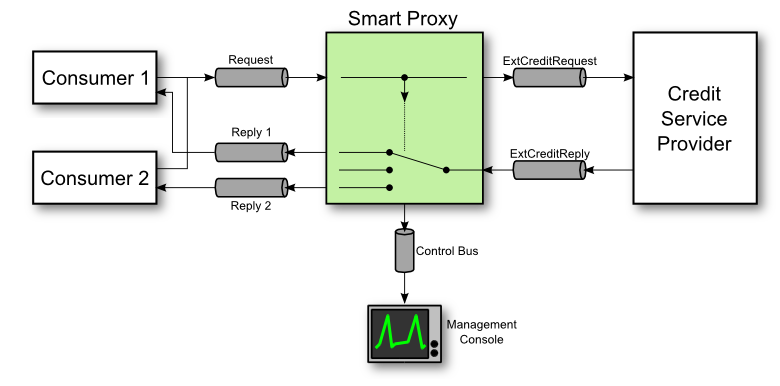
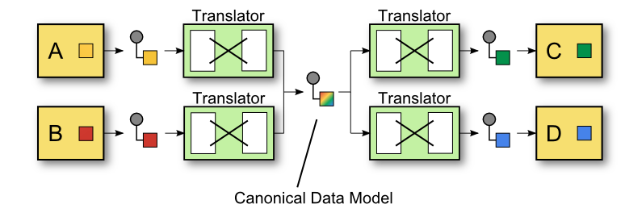
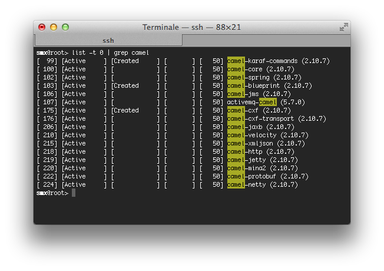
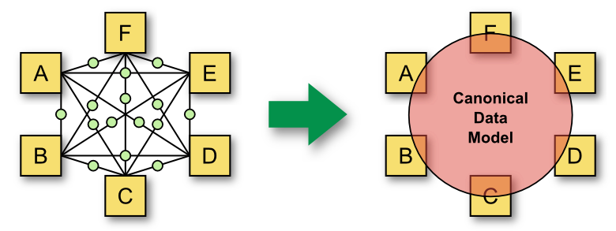
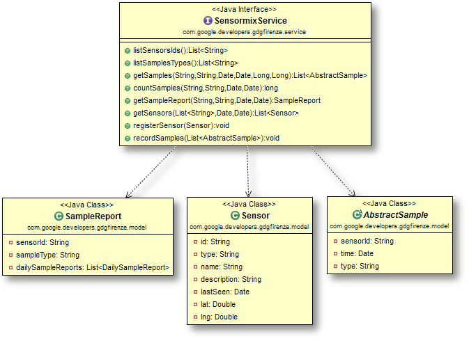

Who We Are
Agenda
- Intro to OSGi and ServiceMix
- Intro to Apache Camel
- Using GWT over ServiceMix
- SensorMix: Architecture Demo
- Cool Facts: why we love this architecture
Intro to OSGi and ServiceMix
A modular approach for Service Oriented backends
Let's meet OSGi
- OSGi: Open Service Gateway initiative
- OSGi Alliance: is a non-profit corporation founded in March 1999 by Ericsson, IBM, Oracle and others
- OSGi Framework: modularity layer for Java platform
The core specifications defines the software lifecycle, modules, services registry and an execution environment.
A Metaphor:
Think to Windows services or Unix daemons but completely Java


Why OSGi is born
OSGi is born with the goal of creating Java embedded systems for residential, automotive and M2M markets. In these contexts it is often required communicating with devices using different protocols.
So his initial objective was to provide a programming model that allow implementing end-to-end services having an abstraction layer that allow unification of different protocols.
Why it grows?
We’ve all used development platforms in the past, such as Java Enterprise Edition (JEE), and even though there have been great advances in this industry, we’re still building large complex systems, which are hard to develop, maintain, and extend.
OSGi Implementations
The specifications enables the creation of multiple implementations of the core framework:
- Apache Felix
- Eclipse Equinox
- Knopflerfish
The OSGi framework
OSGi framework can be represented with three layers:
- The module layer defines the OSGi module concept, called Bundle
- The lifecycle layer defines how bundles are dinamically installed and managed int the OSGi framework
- The service layer supports and promotes a flexible application programming model incorporating concepts popularized by service-oriented computing
The “Module layer”

The core concept of the module layer is the Bundle.
The Bundle is a JAR file that contains extra metadata (manifest).
Compared to a regular JAR, a Bundle has:
- a “closed” classpath
- a more expensive manifest
Thanks to the manifest it is possible to extend classpath visibility
The OSGi manifest
In the manifest it can be specified:
- Bundle identification and description
- Bundle classloading
- Bundle activation
Examples:
The OSGi manifest
Manifest of a simple JAR built with maven
Manifest-Version: 1.0
Build-Jdk: 1.7.0_40
Built-By: gdg-firenze
Created-By: Apache Maven
The OSGi manifest
Manifest of a Bundle
Manifest-Version: 1.0
Bnd-LastModified: 1386750447262
Build-Jdk: 1.7.0_40
Built-By: gdg-firenze
Bundle-ManifestVersion: 2
Bundle-Name: GDG Firenze :: Sensormix :: Example Bundle
Bundle-SymbolicName: example-bundle
Bundle-Vendor: GDG Firenze :: Sensormix Team
Bundle-Version: 1.0.0.SNAPSHOT
Bundle-Activator: com.google.developers.gdgfirenze.dataservice.Activator
Created-By: Apache Maven Bundle Plugin
Export-Package:
com.google.developers.gdgfirenze.model;version="1.0.0.SNAPSHOT",
com.google.developers.gdgfirenze.osgi;version="1.0.0.SNAPSHOT",
com.google.developers.gdgfirenze.service;version="1.0.0.SNAPSHOT"
Import-Package:
javax.jws,javax.jws.soap,javax.xml.bind.annotation,javax.xml.ws
Tool: Bnd-1.50.0
The “Lifecycle layer”
The lifecycle layer server two different purposes:
Externally it defines the bundle lifecycle.
The “Lifecycle layer”
The lifecycle layer server two different purposes:
Internally it defines the Bundle Activator

= public static void main(String[] args)
The “Service layer”
OSGi service layer promotes an interface-based development approach and the separation of interface and implementation.
OSGi services are Java interfaces representing a conceptual contract between service providers and service clients.

The OSGi Service Platform

OSGi specifications define a set of service to improve modular application development
- Configuration Admin (hot configuration)
- Event Admin
- Console Admin
- Log Service
- Blueprint component framework
Karaf: an OSGi container
Karaf is an OSGi container in which we can find several bundles (and services). This bundles provide additional functionalities like Hot deployment, Dynamic configuration, Logging System, Extensible Shell console (SSH).
Karaf its a tipical example of OSGi architecture

ServiceMix: an ESB on OSGi

ServiceMix extends further the Karaf framework with features for implementing an Enterprise Service Bus.
Main ServiceMix functionality are:
- Reliable messaging with Apache ActiveMQ
- Messaging, routing and Enterprise Integration Patterns with Apache Camel
- WS-\* and RESTful web services with Apache CXF
- OSGi-based server runtime powered by Apache Karaf
In addition ServiceMix provides:
- Loosely coupled integration between all the other components with Apache ServiceMix NMR including rich Event, Messaging and Audit API
- Complete WS-BPEL engine with Apache ODE
OSGi and Spring
Use of Spring in Karaf/ServiceMix
Springframework provides many features (dependency injection, ORM, AOP,...)
Karaf/ServiceMix includes a bundle, the Spring Deployer, that scans and detects Spring files within the folder META-INF/spring of a Jar, and it starts the beans defined inside these files without the need of using OSGi API
<?xml version="1.0" encoding="UTF-8"?>
<beans xmlns="http://www.springframework.org/schema/beans"
xmlns:context="http://www.springframework.org/schema/context"
xmlns:xsi="http://www.w3.org/2001/XMLSchema-instance"
xsi:schemaLocation="http://www.springframework.org/schema/beans
http://www.springframework.org/schema/beans/spring-beans-3.0.xsd">
<bean id="consumer" class="com.myapplication.HelloWorldConsumer"
destroy-method="osgiDestroy" init-method="osgiInit"/>
</beans>
OSGi and Spring
Spring DM
Spring DM allows using OSGi services from Spring in a transparent way.
<?xml version="1.0" encoding="UTF-8"?>
<beans xmlns="http://www.springframework.org/schema/beans"
xmlns:xsi="http://www.w3.org/2001/XMLSchema-instance"
xmlns:osgi="http://www.springframework.org/schema/osgi"
xmlns:util="http://www.springframework.org/schema/util"
xmlns:context="http://www.springframework.org/schema/context"
xsi:schemaLocation="http://www.springframework.org/schema/osgi
http://www.springframework.org/schema/osgi/spring-osgi.xsd">
<osgi:service ref="eventService"
interface="com.myapplication.HelloWorldService" />
</beans>
Intro to Apache Camel
An agile way to integrate heterogeneous systems
“To integrate”
What does we mean when we talk about integration?
To find a solution to the following problem:
How can I integrate multiple applications so that they work together and can exchange information?
Enterprise Integration Patterns
Enterprise Integration Patters provide solutions for challenging the previous problem.
What is Enterprise Integration Patters?
It's a book!
Significant Patterns
- Message Channel:
- How does one application communicate with another using messaging?
- Message:
- How can two applications connected by a message channel exchange a piece of information?
- Message Router:
- How can you decouple individual processing steps so that messages can be passed to different filters depending on a set of conditions?
- Message Translator:
- How can systems using different data formats communicate with each other using messaging?
- Message Endpoint:
- How does an application connect to a messaging channel to send and receive messages?
- Dead Letter Channel:
- What will the messaging system do with a message it cannot deliver?
- Message Bus:
- What is an architecture that enables separate applications to work together, but in a decoupled fashion such that applications can be easily added or removed without affecting the others?
- Command Message:
- How can messaging be used to invoke a procedure in another application?
- Document Message:
- How can messaging be used to transfer data between applications?
- Event Message:
- How can messaging be used to transmit events from one application to another?
- Request-Reply:
- When an application sends a message, how can it get a response from the receiver?
- Canonical Data Model:
- How can you minimize dependencies when integrating applications that use different data formats?
How can we integrate?
The main approaches for integration are:
- File Transfer

- Shared Database

- Remote Procedure Invocation

- Messaging

EIPs focuses on integration via “messaging” and define a specific notation for representing integration solutions.
EIP Notation

Solutions with EIP

Solutions with EIP

Solutions with EIP

Remember this one!
How to implement easily EIP solutions?
(rhetorical question)
Integration is still difficult as it exists a wide and heterogeneous set of protocols, interfaces and formats.
How can we implement Enterprise Integration Patterns on a Java platform?
with
Apache Camel
Concise
Application
Messaging
Exchange
Language
Apache Camel
Apache Camel is a versatile open-source integration framework based on known Enterprise Integration Patterns from Hohpe and Woolf's book.
It includes a wide set of components for working with many transport protocols and data formats and it allows to define routing and mediation rules by using domain-specific language.
...it so good for integration that ServiceMix, from version 3 to version 4, switched focus from using JBI to adopt a new approach to integration based on Camel and OSGi.
Example: Content Based Router

from newOrder
choice
when isWidget to widget
otherwise to gadget
Content Based Router in Java DSL
from newOrder
choice
when isWidget to widget
otherwise to gadget
choice
when isWidget to widget
otherwise to gadget
public class MyRoute extends RouteBuilder {
public void configure() throws Exception {
from("activemq:queue:newOrder")
.choice()
.when(xpath("/order/product = 'widget'"))
.to("activemq:queue:widget")
.otherwise()
.to("activemq:queue:gadget")
.end();
}
}
Content Based Router in Spring XML
from newOrder
choice
when isWidget to widget
otherwise to gadget
choice
when isWidget to widget
otherwise to gadget
<camelContext xmlns="http://camel.apache.org/schema/spring">
<route>
<from uri="activemq:queue:newOrder"/>
<choice>
<when>
<xpath>/order/product = 'widget'</xpath>
<to uri="activemq:queue:widget"/>
</when>
<otherwise>
<to uri="activemq:queue:gadget"/>
</otherwise>
</choice>
</route>
</camelContext>
A complete Camel application:
import org.apache.camel.CamelContext;
import org.apache.camel.builder.RouteBuilder;
import org.apache.camel.impl.DefaultCamelContext;
public class CamelExample {
public static void main(String[] args) throws Exception {
CamelContext context = new DefaultCamelContext();
context.addRoutes(new RouteBuilder() {
public void configure() {
from("jetty:http://0.0.0.0:8080/tellMeSomething")
.transform(simple("You say ${in.body}"))
.to("velocity:response.vm");
}
});
context.start();
System.out.println("Press ENTER to exit");
System.in.read();
context.stop();
}
}
Camel on ServiceMix
As soon as Camel bundles are enabled on Karaf-ServiceMix...

Camel on ServiceMix
...it is then possible to define routes directly in Spring XML files, or use a RouteBuilder with Java to start Camel application within ServiceMix.
<?xml version="1.0" encoding="UTF-8"?>
<beans xmlns="http://www.springframework.org/schema/beans">
<camelContext xmlns="http://camel.apache.org/schema/spring">
<route>
<from uri="jetty:http://0.0.0.0:8080/tellMeSomething"/>
<convertBodyTo type="java.lang.String"/>
<transform>
<simple>You say ${in.body}</simple>
</transform>
<to uri="velocity:response.vm" />
</route>
</camelContext>
</beans>
Camel: components
162 components listed on camel.apache.org/components.html
| ActiveMQ | ActiveMQ Broker | Activiti | AHC | AMQP | APNS | Atom | Avro | |
| AWS-CW | AWS-DDB | AWS-S3 | AWS-SDB | AWS-SES | AWS-SNS | AWS-SQS | Bean | |
| Bean Validation | Browse | Cache | Class | CMIS | Cometd | Context | ControlBus | |
| CouchDB | Crypto | CXF | CXF Bean | CXFRS | DataFormat | DataSet | Db4o | |
| Direct | Direct-VM | Disruptor | DNS | EJB | ElasticSearch | Esper | EventAdmin | |
| Exec | File | Flatpack | FOP | FreeMarker | FTP | FTPS | ||
| GAuth | Geocoder | GHttp | GLogin | GMail | GTask | Guava EventBus | Hazelcast | |
| HBase | HDFS | Hibernate | HL7 | HTTP | HTTP4 | iBATIS | IMAP | |
| IMAPS | Infinispan | IRC | JavaSpace | JBI | JCIFS | jclouds | JCR | |
| JDBC | Jetty | JGroups | JMS | JMX | JPA | Jsch | JT/400 | |
| Kestrel | Krati | Language | LDAP | Log | Lucene | MINA | MINA2 | |
| Mock | MongoDB | MQTT | MSV | Mustache | MVEL | MyBatis | Nagios | |
| Netty | Netty HTTP | NMR | OptaPlanner | Pax-Logging | POP3 | POP3S | Printer | |
| Properties | Quartz | Quartz2 | Quickfix | RabbitMQ | RCode | Ref | Restlet | |
| RMI | RNC | RNG | Routebox | RSS | Salesforce | SAP NetWeaver | Scalate | |
| SEDA | SERVLET | SFTP | Sip | SJMS | Smooks | SMPP | SMTP | |
| SMTP | SNMP | Solr | Splunk | Spring Event | Spring LDAP | Spring Neo4j | Spring Redis | |
| Spring Web Services | SpringBatch | SpringIntegration | SQL | StAX | Stomp | Stream | StringTemplate | |
| Stub | Test | Timer | Validation | Velocity | Vertx | VirtualBox | ||
| VM | Weather | Websocket | XML Security | XMPP | XQuery | XSLT | Yammer | |
| ZeroMQ | Zookeeper |
Camel: data format
25+ data formats listed camel.apache.org/data-format.html
| Avro | Base64 | BeanIO | Bindy | Castor | |
| Crypto | CSV | EDI | Flatpack DataFormat | GZip data format | |
| HL7 DataFormat | JAXB | JiBX | JSON | PGP | |
| Protobuf | Serialization | SOAP | String | XmlBeans | |
| XmlJson | XMLSecurity DataFormat | XStream | Zip DataFormat | Zip File DataFormat |
Using GWT on ServiceMix
An alternative way to develop Web Applications
SOA and SOFEA
Web Frameworks for SOFEAs
ServiceMix and Web Applications
Natively ServiceMix is not a Web Container but it anyhow allows to deploy web applications.
In particular this is interesting when our application follow the previous approach.
Our SOFEA
Deploy WARs on Karaf/ServiceMix
WAR Deployer
The WAR Deployer is a bundle that take care of deploying Web Application on Karaf/ServiceMix
What does it do?
- It search for the /WEB-INF/web.xml file
- If found, it publish the static files and Servlets defined in web.xml via HTTP
Is it enough?
Deploy WARs on Karaf/ServiceMix
The WAR needs some changes
- It must have /META-INF/MANIFEST.MF file in the JAR's root
- MANIFEST.MF must have:
- The header
Web-ContextPath(the web application will be published to the context path specified by this header) - The header
Bundle-ClassPath: .,WEB-INF/classes(this tell Karaf/ServiceMix where to search for bytecode files)
- The header
It is also recommended to create a Skinny War and resolve dependencies from OSGi Bundles (it can be done easily using maven-war-plugin and maven-bundle-plugin)
Have we finished?
GWT applications on Karaf/ServiceMix
...also gwt-servlet.jar need changes!
GWT is not fitted for use in OSGi.
It is not a bundle as the manifest of gwt-servlet.jar is missing required OSGi headers.
What then?
How to use GWT in OSGi
Four ways:
There are 4 ways to and OSGi-fied gwt-servlet.jar so that it can be deployed on Karaf/ServiceMix.
- Case 1:
- Compile manually gwt-servlet.jar with required OSGi headers
- Case 2:
- Deploy the non-OSGi Jar and wrap it as a bundle setting up configuration for the MANIFEST.MF as parameters of the install command
- Case 3:
- Wait for ServiceMix Team to release the Bundle for GWT-Servlet
- Case 4:
- Hope that GWT Project Team accepts the patch, that we have proposed, in GWT 2.6.0 or in a near future.
How to use GWT in OSGi
What's the impact?
- Case 1:
-
git fetch https://gwt.googlesource.com/gwt refs/changes/51/5351/7
git checkout FETCH_HEAD
ant dist
install -s mvn:com.google.gwt/gwt-servlet/2.6.0
- Case 2:
install -s wrap:mvn:com.google.gwt/gwt-servlet/2.6.0$Bundle-Name=GWT-Servlet&Bu
ndle-SymbolicName=com.google.gwt.gwt-servlet&Bundle-Version=2.6.0&Export-Packag
e=com.google.gwt.user.client.rpc.*,org.hibernate.validator.engine,com.google.we
b.bindery.requestfactory.vm.impl.*,!javax.validation,!org.hibernate.validator.*
,!*.client.*,!*.impl.*,*&Import-Package=javax.servlet.*,javax.validation;resolu
tion:=optional,org.json;resolution:=optional,javax.validation.*;resolution:=opt
ional,org.json.*;resolution:=optional,!com.google.gwt.*,*;resolution:=optional- Case 3:
install -s mvn:org.apache.servicemix.bundles/org.apache.servicemix.bundles.gwt-servlet/2.6.0_1- Case 4:
install -s mvn:com.google.gwt/gwt-servlet/2.6.0
GWT Samples adapted for Karaf/ServiceMix
We have adapted some example from GWT distribution for running on Karaf/ServiceMix:
https://github.com/cristcost/gwt-karaf-examples
And next we are going to present the demo of an application that put together all the technologies presented up to now.
SensorMix
Example of an architecture based on ServiceMix, Camel and GWT
How SensorMix is composed
External Architecture
How SensorMix is composed
Internal Architecture

Demo
Data Model Bundle
The Canonical Data Model EIP
From EIP book:
“I am designing several applications to work together through Messaging. Each application has its own internal data format.”
“How can you minimize dependencies when integrating applications that use different data formats?”
The Canonical Data Model EIP
Our approach to CDM
We like the Java first:
- Data model: POJO
- Services model: Java Interfaces
We use JaxB and JaxWS annotations to generate XML Schema and WSDL from our model.
We find starting from objects more natural, linear and agile :
- Final XML Schema is cleaner
- We can avoid XML Schema validation:
- unmarshal Java exception = XML is not valid
- Modeling on Java classes is faster (for developers)
Binding Java-XML Schema
@XmlAccessorType(XmlAccessType.FIELD)
@XmlType(name = "SampleReport")
public class SampleReport implements Serializable {
@XmlAttribute(required = true, name = "sensorId")
@XmlSchemaType(name = "anyURI")
private String sensorId;
@XmlAttribute(required = false, name = "sampleType")
private String sampleType;
@XmlElement(required = false, name = "dailySampleReport")
private List<DailySampleReport> dailySampleReports;
<xs:complexType name="SampleReport">
<xs:attribute name="sensorId" type="xs:anyURI" use="required"/>
<xs:attribute name="sampleType" type="xs:string"/>
<xs:sequence>
<xs:element name="dailySampleReport" type="tns:DailySampleReport"
maxOccurs="unbounded" minOccurs="0" />
</xs:sequence>
</xs:complexType>
JaxB annotated POJOs
@XmlAccessorType(XmlAccessType.FIELD)
@XmlType(name = "SampleReport")
public class SampleReport implements Serializable {
/** The sensor id. */
@XmlAttribute(required = true, name = "sensorId")
@XmlSchemaType(name = "anyURI")
private String sensorId;
/** The sample type. */
@XmlAttribute(required = false, name = "sampleType")
private String sampleType;
/** The daily sample reports. */
@XmlElement(required = false, name = "dailySampleReport")
private List<DailySampleReport> dailySampleReports;
// ...

JaxWS annotated interfaces
@WebService(name = "SensormixService",
targetNamespace = "http://developers.google.com/gdgfirenze/ns/service")
@SOAPBinding(parameterStyle = ParameterStyle.WRAPPED, style = Style.DOCUMENT, use = Use.LITERAL)
public interface SensormixService {
@WebMethod(action = "urn:#listSensorsIds")
@RequestWrapper(localName = "listSensorsIdsIn",
targetNamespace = "http://developers.google.com/gdgfirenze/ns/service")
@ResponseWrapper(localName = "listSensorsIdsOut",
targetNamespace = "http://developers.google.com/gdgfirenze/ns/service")
@WebResult(name = "sensorId")
List<String> listSensorsIds();
@WebMethod(action = "urn:#listSamplesTypes")
@RequestWrapper(localName = "listSamplesTypesIn",
targetNamespace = "http://developers.google.com/gdgfirenze/ns/service")
@ResponseWrapper(localName = "listSamplesTypesOut",
targetNamespace = "http://developers.google.com/gdgfirenze/ns/service")
@WebResult(name = "sampleType")
List<String> listSamplesTypes();
// ...

Using the CDM on GWT
Finally, if we want to use our datamodel also on a GWT project, let's add a .gwt.xml module:
<?xml version="1.0" encoding="UTF-8"?>
<!-- When updating your version of GWT, you should also update this DTD reference,
so that your app can take advantage of the latest GWT module capabilities. -->
<!DOCTYPE module PUBLIC "-//Google Inc.//DTD Google Web Toolkit 2.5.1//EN"
"http://google-web-toolkit.googlecode.com/svn/tags
/2.5.1/distro-source/core/src/gwt-module.dtd">
<module>
<!-- Specify the paths for translatable code -->
<source path='model' />
<source path='service' />
</module>

Data Service Bundle
The bundle dataservice
It has a service for providing storage and data access capabilities.
The service is registered in OSGi using Spring DM.
Registering the service
<osgix:cm-properties id="dataSourceProperties"
persistent-id="sensormix.jpa.persistenceunit">
<prop key="sensormix_db.driverClassName">org.hsqldb.jdbcDriver</prop>
<prop key="sensormix_db.url">jdbc:hsqldb:mem:sensormix_db</prop>
<prop key="sensormix_db.username">sa</prop>
<prop key="sensormix_db.password"></prop>
</osgix:cm-properties>
<osgi:service ref="sensormixService">
<osgi:interfaces>
<value>com.google.developers.gdgfirenze.service.SensormixService</value>
<value>com.google.developers.gdgfirenze.osgi.SensormixAdminInterface</value>
</osgi:interfaces>
</osgi:service>
Java code of the service
public class SensormixServiceJpaImpl implements SensormixService, SensormixAdminInterface {
private EntityManagerFactory entityManagerFactory;
@Override
public List<String> listSensorsIds() {
List<String> result = new ArrayList<String>();
try {
EntityManager em = entityManagerFactory.createEntityManager();
TypedQuery<String> q = em.createQuery("SELECT s.id FROM JpaSensor s", String.class);
result.addAll(q.getResultList());
em.close();
} catch (Exception e) {
logger.log(Level.SEVERE, "Error during sensors list retrieving", e);
}
return result;
}
Spring ORM
<bean id="emf" class="org.springframework.orm.jpa.LocalContainerEntityManagerFactoryBean">
<property name="persistenceUnitName" value="sensormix_db" />
<property name="jpaVendorAdapter">
<bean class="org.springframework.orm.jpa.vendor.EclipseLinkJpaVendorAdapter">
<property name="showSql" value="true" />
</bean>
</property>
<property name="jpaProperties">
<props>
<prop key="eclipselink.ddl-generation">create-tables</prop>
<prop key="eclipselink.logging.level">INFO</prop>
<prop key="eclipselink.weaving">false</prop>
<prop key="javax.persistence.jdbc.driver">${sensormix_db.driverClassName}</prop>
<prop key="javax.persistence.jdbc.url">${sensormix_db.url}</prop>
<prop key="javax.persistence.jdbc.user">${sensormix_db.username}</prop>
<prop key="javax.persistence.jdbc.password">${sensormix_db.password}</prop>
</props>
</property>
</bean>
<bean id="sensormixService"
class="com.google.developers.gdgfirenze.dataservice.SensormixServiceJpaImpl">
<property name="entityManagerFactory" ref="emf" />
</bean>
Integration Bundle
The bundle for integrating sensors
It defines Camel routes for input of samples from Android, Arduino and iOS
It mostly uses Spring XML, an XSLT and a velocity template
The only exception of code is the SampleAdapter class that transforms data from Protocol Buffer to our data model using Java
Let's review SensorMix interfaces
UDP and HTTP input routes
Used for Android and Arduino sensors
<route> <from uri="mina2:udp://0.0.0.0:10081" /> <to uri="seda:jsonEntry" /> </route>
<route>
<from uri="jetty:http://0.0.0.0:10080/sensormixSamplesEndpoint" />
<to uri="seda:jsonEntry" />
<setHeader headerName="Content-Type">
<constant>application/json</constant>
</setHeader>
<to uri="velocity:vm_templates/json_response_template.vm" />
</route>
JSON transformation route
<route>
<from uri="seda:jsonEntry" />
<convertBodyTo type="java.lang.String" />
<unmarshal>
<xmljson elementName="item" arrayName="list" rootName="root" />
</unmarshal>
<to uri="xslt:xslt_adapters/raw2cdm_adapter.xsl" />
<unmarshal>
<jaxb contextPath="com.google.developers.gdgfirenze.service" />
</unmarshal>
<to uri="seda:serviceEntry" />
</route>
TCP + ProtoBuf route
<route>
<from uri="netty:tcp://0.0.0.0:10082/?decoders=#length-decoder&sync=false" />
<unmarshal>
<protobuf instanceClass="com.google.developers
.gdgfirenze.protobuf.SensormixProtos$SampleMessage" />
</unmarshal>
<bean ref="sampleAdapter" method="transform" />
<to uri="seda:serviceEntry" />
</route>
<bean id="sampleAdapter"
class="com.google.developers.gdgfirenze.integration.SampleAdapter" />
package com.google.developers.gdgfirenze.integration;
public class SampleAdapter {
public SamplesPayload transform(SampleMessage message) {
SamplesPayload ret = new SamplesPayload();
// process 'SampleMessage' and return the adapted 'SamplesPayload'
return ret;
}
}
The output route toward the OSGi service
<osgi:reference id="sensormixService"
interface="com.google.developers.gdgfirenze.service.SensormixService"
timeout="30000" cardinality="1..1" />
<route>
<from uri="seda:serviceEntry" />
<to uri="bean:sensormixService?method=recordSamples(${body.samples})" />
</route>
Admin WebApp Bundle
SensorMix GWT Web Application
We have seen that for deploying a GWT Web Application on Karaf/ServiceMix we need to have:
- A WAR that is a Bundle (has OSGi headers).
- The gwt-servlet.jar installed correctly as bundle.
What has been done for SensorMix?
Let's configure the maven-bundle-plugin
<instructions>
<Bundle-SymbolicName>${project.artifactId}</Bundle-SymbolicName>
<Bundle-Description>${project.description}</Bundle-Description>
<Web-ContextPath>/${project.artifactId}</Web-ContextPath>
<Bundle-ClassPath>.,WEB-INF/classes</Bundle-ClassPath>
<Import-Package>
com.google.gwt.user.client.rpc.*,
com.google.gwt.user.client.rpc.core.com.google.gwt.core.shared,
com.google.gwt.user.client.rpc.core.java.lang,
com.google.gwt.user.client.rpc.core.java.math,
com.google.gwt.user.client.rpc.core.java.sql,
com.google.gwt.user.client.rpc.core.java.util,
com.google.gwt.user.client.rpc.core.java.util.logging,
com.google.gwt.user.server.rpc.core.java.lang,
com.google.gwt.user.server.rpc.core.java.util,
!com.google.gwt.*.client.*,
*
</Import-Package>
</instructions>
Let's configure the maven-war-plugin
Remember the skinny war?
Let's remove dependencies from the lib:
<packagingExcludes>WEB-INF/lib/,
WEB-INF/classes/META-INF/</packagingExcludes>
Tell Maven to copy the Manifest where OSGi expects it to be:
<archive>
<manifestFile>
${project.build.outputDirectory}/META-INF/MANIFEST.MF
</manifestFile>
</archive>
Let's import the Canonical Data Model
In the file SensormixAdminApp.gwt.xml:
<inherits name='com.google.developers.gdgfirenze.Sensormix' />
In pom.xml:
<dependency>
<groupId>com.google.developers.gdgfirenze</groupId>
<artifactId>sensormix-datamodel-api</artifactId>
<version>${project.version}</version>
</dependency>
<dependency>
<groupId>com.google.developers.gdgfirenze</groupId>
<artifactId>sensormix-datamodel-api</artifactId>
<version>${project.version}</version>
<classifier>sources</classifier>
</dependency>
GWT RPC Plumbing diagram
We started from this...
SensorMix RPC Plumbing diagram
...to get this
GWT RPC in Sensormix
Client Side
Call GWT.create() to get the service:
GwtSensormixServiceAsync sensormixService
= GWT.create(GwtSensormixService.class);
Use the service:
sensormixService.listSensorsIds(new AsyncCallback() { @Override public void onFailure(Throwable caught) { // handle the request failure } @Override public void onSuccess(List result) { // handle the response from the service } });
GWT RPC in Sensormix
Server Side
SensormixServiceProxy.java is GWT RPC service that uses an OSGi service. During the initialization, it get a reference to it using the OSGi Framework API.
public void init() throws ServletException {
final BundleContext context = FrameworkUtil.getBundle(this.getClass()).getBundleContext();
tracker = new ServiceTracker(context, SensormixService.class.getName(), null);
tracker.open();
}
How does it use the OSGi service?
private SensormixService getService() {
return (SensormixService) tracker.waitForService(10000);
}
public List<String> listSensorsIds() {
return getService().listSensorsIds();
}
Cool Facts
Why we love this architecture
Integrating Arduino

Integrating Arduino
Integrating Android
HttpPost httppost = new HttpPost(url.toString());
httppost.setHeader("Content-type", "application/json");
StringEntity se = new StringEntity(bodyForHttpPostRequest);
se.setContentEncoding(new BasicHeader(HTTP.CONTENT_TYPE,
"application/json"));
httppost.setEntity(se);
HttpResponse response = httpclient.execute(httppost);
String temp = EntityUtils.toString(response.getEntity());
logger.info("JSON post response: " + temp);
Integrating Android - NFC
Tag tag = getIntent().getParcelableExtra(NfcAdapter.EXTRA_TAG);
StringBuilder id = new StringBuilder();
byte[] data = tag.getId();
for (int i = 0; i < data.length; i++) {
id.append(String.format("%02x", data[i]));
if (i < data.length - 1) {
id.append(":");
}
}
JSONObject jsonSamplePacket = new JSONObject();
JSONObject obj = new JSONObject();
jsonSamplePacket.put("sample", obj);
obj.put("device_id", "the device id");
obj.put("time", dateFormat.format(new Date()));
obj.put("nfc", id);
Intent intent = new Intent(this, DataSenderService.class);
intent.putExtra(DataSenderService.INTENT_EXTRA,
jsonSamplePacket.toString());
startService(intent);
Let's install ServiceMix

Creating application distribution

Karaf Features
<features name='sensormix-1.0.0'>
<feature name="sensormix-core" version="1.0.0">
<bundle>mvn:com.google.developers.gdgfirenze/sensormix-datamodel-api/1.0.0</bundle>
</feature>
<feature name="sensormix-dataservice" version="1.0.0">
<feature version="1.0.0">sensormix-core</feature>
<feature>spring-orm</feature>
<!-- ... -->
<bundle>mvn:mysql/mysql-connector-java/5.1.26</bundle>
<bundle>mvn:org.apache.servicemix.bundles/org.apache.servicemix.bundles.commons-dbcp/1.4_3</bundle>
<bundle>mvn:org.apache.servicemix.bundles/org.apache.servicemix.bundles.javax-inject/1_2</bundle>
<bundle>mvn:org.eclipse.persistence/javax.persistence/2.1.0</bundle>
<bundle>mvn:org.eclipse.persistence/org.eclipse.persistence.jpa/2.5.0</bundle>
<!-- ... -->
<bundle>mvn:com.google.developers.gdgfirenze/sensormix-dataservice-bundle/1.0.0</bundle>
</feature>
<feature name="sensormix" version="1.0.0">
<feature version="1.0.0">sensormix-dataservice</feature>
<feature version="1.0.0">sensormix-webservice</feature>
</feature>
</features>
The Karaf's Features Maven Plugin
<plugin>
<groupId>org.apache.karaf.tooling</groupId>
<artifactId>features-maven-plugin</artifactId>
<version>${features.plugin.version}</version>
<executions>
<execution>
<id>add-features-to-repo</id>
<phase>package</phase>
<goals>
<goal>add-features-to-repo</goal>
</goals>
<configuration>
<descriptors>
<descriptor>com.google.developers.gdgfirenze
/sensormix-deploy-features/1.0.0/xml/features</descriptor>
</descriptors>
<features>
<feature>sensormix/1.0.0</feature>
</features>
<repository>target/local-repo</repository>
</configuration>
</execution>
</executions>
</plugin>
Let's install SensorMix
Kryo and Benchmark
For JPA persistence datamodel we used only one class for all samples. This class has a field byte[] that is the sample serialization (Kryo).
Using JPA abstraction we realized a benchmark to evaluate performance and size. So we were able to choose the best solution.
ServiceMix: How much overhead?
ServiceMix standard distribution is around 65MB on the file system
Maven ed Eclipse
SensorMix has been developed in a Team using Maven and Eclipse.
In particular:
- The Webapp (GWT) is developed in the same Java IDE
- Distribution made with Karaf's Features Maven Plugin
- Checkstyle and PMD used to improve Team cooperation
Conclusions
Conclusions and bibliographic reference
Issue on GWT
We need GWT 2.6.0 to be OSGi-fied:
- please help us, star this issue on GWT if you think this approach is interesting:
- or vote this issue on Jira so to have an equivalent bundle released from ServiceMix team:
Talk slides and source code
- Slides:
- http://cristcost.github.io/sensormix/
- Sensormix:
- https://github.com/cristcost/sensormix/
- Sensormix Android:
- https://github.com/cristcost/sensormix-android/
- Sensormix Arduino:
- https://github.com/michelefi/sensormix-arduino/
Books
- Camel in Action
- C. Ibsen, J. Anstey - Manning
- Enterprise Integration Patterns
- G. Hohpe, B. Woolf - Addison Wesley
- Spring DM in Action
- A. Cogoluègnes, T. Templier, A. Piper - Manning
- OSGi in Action
- R. S. Hall, K. Pauls, S. McCulloch, D. Savage - Manning
- OSGi In depth
- Alexandre de Castro Alves - Manning
Links
- Apache Camel:
- http://camel.apache.org/
- Apache ServiceMix:
- http://servicemix.apache.org/
- Apache Karaf:
- http://karaf.apache.org/
- GWT:
- http://www.gwtproject.org/